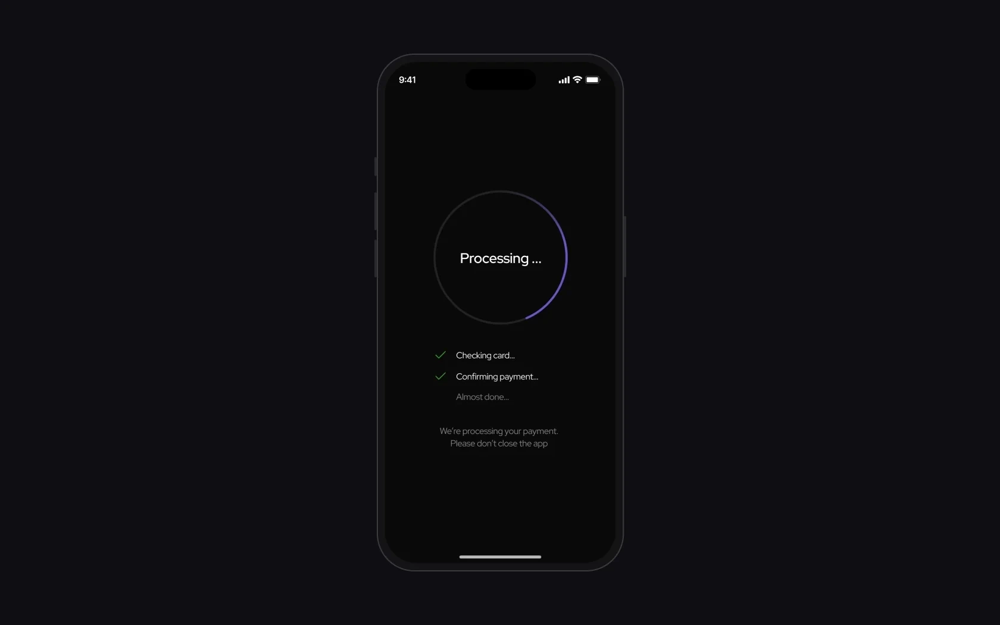
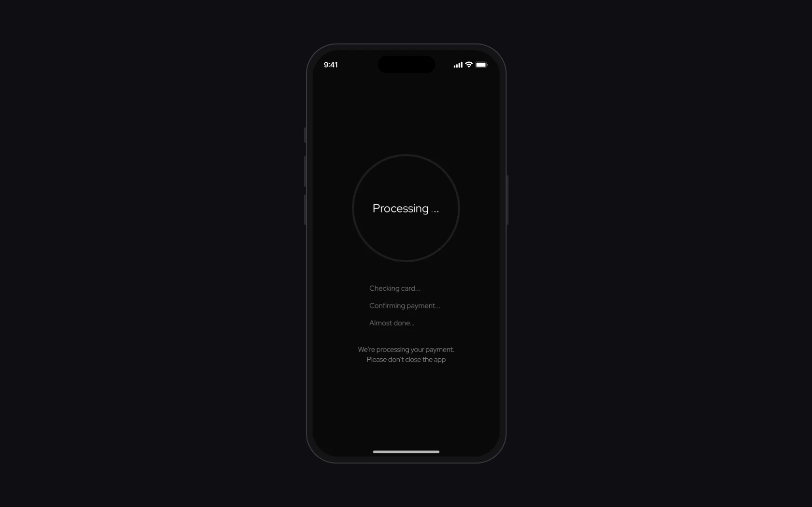
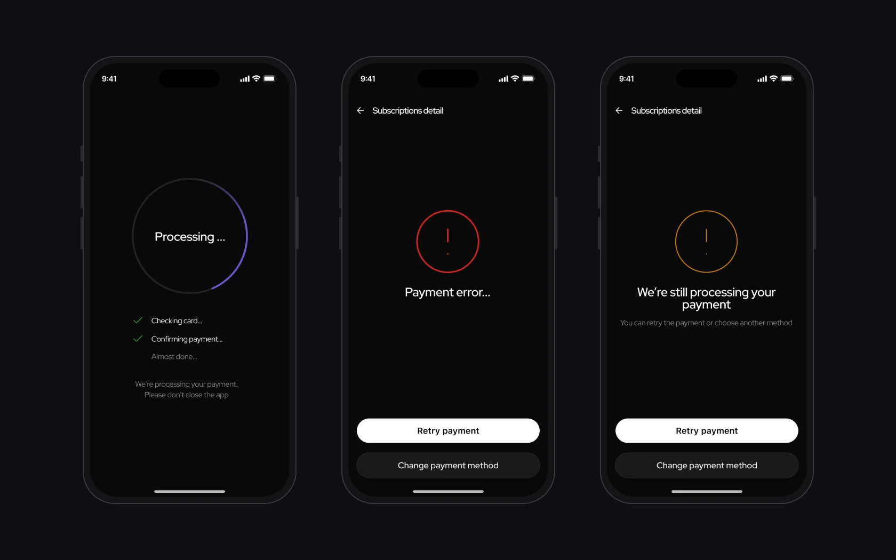
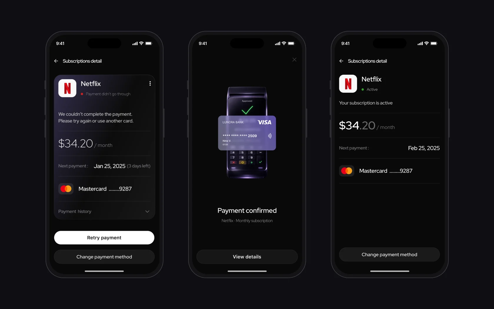
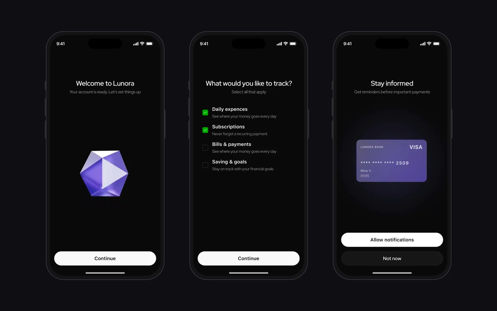

Lunora – мій власний проєкт, на якому я пройшла повний цикл: три глибинні інтервʼю, опитування, гіпотеза, сценарії, стани, UI kit, чотири юзабіліті-тести прототипу і план метрик. Фокус – на тому, що в навчальних проєктах зазвичай пропускають: помилки, таймаути й повторні спроби.
Що показало дослідження
Аналіз банкінгу й менеджерів підписок показав те саме: processing часто «порожній», а помилка без наступного кроку забирає довіру. Звідси гіпотеза: якщо пояснити статус, причину й наступну дію, людина відчуватиме більше контролю.
Бачили списання за підписку, про яку забули
8 з 9 мають дві й більше карти чи акаунтиХочуть один застосунок для підписок, рахунків і витрат
Четверо – за умови, що інтерфейс буде простийОбережні з AI: «залежить від безпеки»
Негативно – ніхто. 6 довіряли б більше, якби функції можна було вимкнутиОбрали нейтральний тон: «Ваші витрати зросли на 10%»
4 з 9 найважчим у фінансах називають стресВибірка мала й однорідна: усі девʼятеро працюють у найомі, восьмеро – віком 21–40. Це напрям для рішень, а не перевірка гіпотези.
Стани платежу
Кожен стан відповідає на три питання: що відбувається зараз, чому це сталося і що робити далі.
Статус, next payment, метод оплати
Пояснення замість порожнього лоадера, фонові дії заблоковано
Коротке підтвердження і швидке закриття
Без звинувачення: Retry payment або Change payment method
Окремо від Failed: статус ще не фінальний, повторно не платимо
Retry / Change method → назад у Processing
Оновлений статус і нова дата оплати
Processing пояснює, що відбувається
- Чому
- На юзабіліті-тестах двоє з чотирьох сказали, що платіж обробляється дуже довго: вони не розуміли, що відбувається і чи можна закрити екран.
- Що зробила
- До кроків «Перевіряємо картку → Підтверджуємо платіж → Майже готово» додала кольорове кільце прогресу і галочки на пройдених кроках. Підпис прямо каже не закривати застосунок, фонові дії заблоковані.
- Результат
- Видно, на якому кроці платіж і що екран закривати не треба.
СтатусНова версія стану в прототипі – зміна прямо з тестів. Повторно ще не тестували.


До тестуванняПісля тестуванняTimeout – це не Failed
- Чому
- Під час таймауту людина не знає, чи списалися гроші, і не впевнена, чи повторювати платіж. Якщо показати таймаут як помилку, вона може заплатити двічі.
- Що зробила
- Два різні стани. Failed – повідомлення без звинувачення й дві дії: Retry або Change payment method. Timeout – нейтральне «Ми все ще обробляємо платіж».
- Результат
- Таймаут більше не виглядає як помилка, тож немає причини платити вдруге.
СтатусСпільний патерн в UI kit з однаковою логікою CTA. З людьми ще не тестували.

Наступний крок на кожному стані
- Чому
- Коли платіж не пройшов, людина не бачить зрозумілого next step і не розуміє, коли підписка знову активна.
- Що зробила
- Деталі підписки показують статус, суму, дату наступної оплати й метод. Після успіху – коротке підтвердження і повернення в стан Active з новою датою.
- Результат
- Після будь-якого результату оплати людина знає, чи активна підписка і коли наступний платіж.
СтатусУ прототипі через Smart Animate.

Онбординг і гаманці без тиску
- Чому
- Фінансові застосунки часто тиснуть, а 4 з 9 опитаних найважчим у фінансах називають стрес.
- Що зробила
- Онбординг питає, що людина хоче відстежувати, запит на сповіщення пояснює користь, а гаманець можна підключити або пропустити.
- Результат
- Людина сама обирає, що підключати і коли, без обовʼязкових кроків.
СтатусУ прототипі.

- 01
Опитування показало інтерес до одного місця для фінансів, але й обережність щодо AI – тому ставка на прозорість статусів, а AI лишився концептом асистента.
- 02
Свідомо поза межами: банківські інтеграції, юридичні сценарії, монетизація й ML-реалізація.
- 03
Далі – повторно протестувати новий Processing і міряти payment recovery rate та drop-off під час retry.